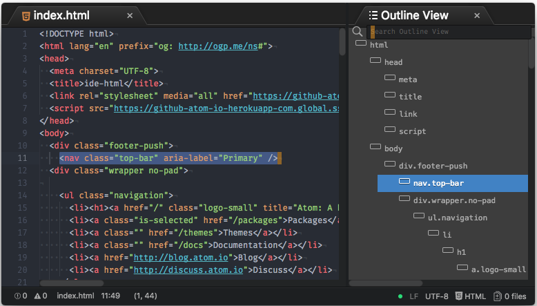
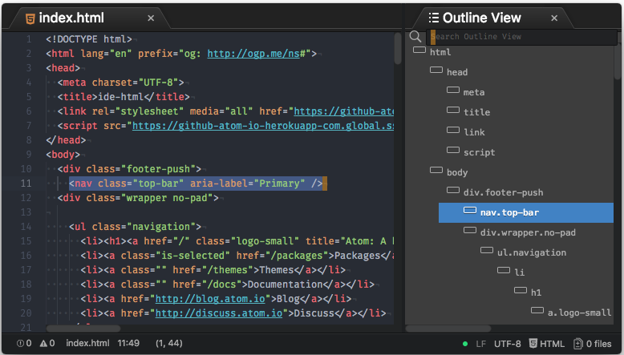
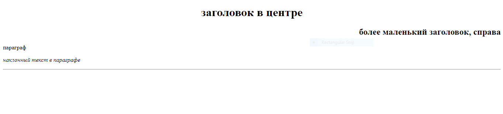
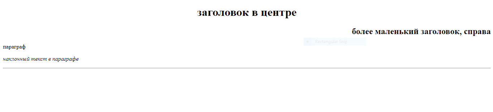

Однажды, в одной далёкой галактике, на планете Земля-21, в прекрасной, расцветающей агрономической стране - Молдове, в один, не побоюсь этого слова, прекрасный день, когда солнце светило ярко, а температура на улице была всего-то 281,15 по кельвину, мне написала одна моя хорошая подруга. В то время я записывал акустический кавер на легендарную песню "Я люблю майнкрафт" от рэпера Lil Jez'а, известного также как MINECRAFT BOY, и необходимость отвлекаться не стала для меня приятной новостью. Но, разобравшись в ситуации, я понял, что проблема очень, очень и очень серьёзна.
Дело в том, что несмотря на то, что мы живём в такой прогрессивной и технически развитой стране как Молдова, уроки информатики, к сожалению, проводятся.... не проводятся вообще. Во всяком случае, по этой теме. Сначала я не посчитал это большой проблемой, но посмотрев один из видеоуроков по HTML, присланных нам нашим учителем, я пришел в ужас. Нет! Ужас - не то слово! Это был кошмар, жуть, страх, беспредел, безвыходность - называйте это как хотите! Еще никогда я не видел, чтобы материал так бедно и некорректно подавался! И в тот момент я понял, зачем я пришёл в этот мир. Моей задачей стало спасти наш 10Б класс от технологической безграмотности и научить своих одноклассников великому языку разметки HTML! И я, сев за компьютер и заспидранив онлайн тест по английскому, полный сил и решительности принялся за дело.
HTML (сокращённо от Hyper Text Markdown Language) - это язык разметки, предназначенный для создания веб-сайтой с помощью современных технологий обмена данными, известными миру как Всемирная Сеть Интернет (или же World Wide Web, для тех чей English очень Great Britain). Этот язык довольно прост в изучении, и, скорее всего, что после пятнадцати минут изучения этой веб-страницы, написаной, кстати, на вышеупомянутом HTML, вы сможете создавать сайты (почти) не хуже этого.
ПРИМЕЧАНИЕ: HTML - ****НЕ**** ЯЗЫК ПРОГРАММИРОВАНИЯ. ЭТО - ЯЗЫК РАЗМЕТКИ. ЕСЛИ ВЫ ПЕРЕПУТАЕТЕ, ВАС ЗАКИБЕРБУЛЯТ ЗЛЫЕ ПРОГРАММИСТЫ (типо меня) В КОММЕНТАРИЯХ СОЦСЕТИ ВКОНТАКТЕ. ПОЭТОМУ НЕ ПУТАЙТЕ, ПОЖАЛУЙСТА. Я предупредил.
Одним из первых, и самых, признаюсь, страшных, моих замечаний к видеоуроку который был нам прислан, было то, что преподаватель использовал для редактирования HTML файлов.... встроенный блокнот Windows. Обычные ученики, возможно, не видят в этом проблемы, но мне, как программисту, очень, очень и очень больно было смотреть на это. И ладно бы что! Но ведь создатель урока не только подступала к созданию веб-сайтов в корне неправильно - она ещё и учила других делать также! Именно это и стало одним из решающих факторов, побудивших меня написать эту страничку. Но мы отвлеклись; вернёмся наконец к нашей теме - выбору IDE.
IDE, или же редактор кода - это, простыми словами, цветной и очень навороченный блокнот. Так что же это, спросите вы, даёт нам, как будущим разметчикам и веб-дизайнерам? Всё просто. Чтобы понять преимущество кодового редактора перед блокнотом, достаточно взглянуть на следующие фотокартинки:
 

Как мы видим, блокнотом код воспринимается просто как текст, ведь блокнот и был создан для записи текста, а не для записи компьютерного кода. В специализированном же кодовом редакторе Atom весь код подсвечен, автоматически разделен на фрагменты и отформатирован. Не знаю, как вам, но как по мне, так выбор между блокнотом и специализированным редактором - очевиден.
Я бы мог предоставить обширный список из многих десятков и даже сотен IDE и завести дискуссию о том, какая же из них лучше, но уже 8 часов вечера, а мой папа, который, мягко говоря, не слишком одобряет моё черезмерное увлечение современными технологиями, скоро закроет мне доступ в Интернет, так что я буду краток: выбирайте кодовый редактор Atom. Он бесплатен, эффективен, и, что главное, прост и удобен в использовании.
После этого, создав простой текстовый файл, поменяйте формат с .txt на .html и откройте его в Atom.
ПРИМЕЧАНИЕ: Если вы не можете изменить расширение файла, вам, вероятно, нужно включить расширения файлов в Windows.
Весь язык HTML построен на тегах - своеобразных параметров, которые компьютер учтёт при отрисовке веб-страницы. У тегов также есть аттрибуты - дополнительные свойства для них. В простейшем примере это будет выглядеть вот так:

Давайте же теперь разберем подробнее, что из этого является тегом, что аттрибутом, и т.д.
В HTML, у большинства тегов есть начало и конец. Начало тега обозначается следующим образом:
Между началом и завершением тега прописывается содержание тега, то есть текст. То есть, чтобы вывести наш текст на страницу, нам понадобится прописать следующее в нашем файле:
Также, у некоторых тегов есть сокращённая форма. Их мы рассматривать в этот раз не будем, т.к. они не рассатриваются в изначальном видеоуроке, но знать их не будет лишним. Записываются они так:
Как мы можем видеть, в конце у таких тегов находится наклонная чёрточка, а закрывающий тег отсутствует.
ПРИМЕЧАНИЕ: внутрь тегов также можно помещать и другие теги.
Также у тегов есть аттрибуты, которые в бесконечном количестве могут быть прописаны сразу после названия тега:
Как мы видим, тег может принимать текстовые значения (в кавычках) и числовые. Для выполнения домашнего задания нам понадобится лишь один аттрибут - аттрибут align. Он может принимать значения left, right и center. Выглядеть это будет следующим образом:
Итак, узнав о том, что такое тег и аттрибут, мы можем смело приступать к написанию нашего первого сайта!
Итак, простой HTML файл будет выглядеть примерно вот так:
Теперь давайте разберём этот файл построчно.
В первой строке прописан код, определяющий тип документа:
Он даёт браузеру понять, что он работает именно с форматом HMTL, а не с каким-либо другим. Его рекоммендуется писать на первой строке каждго сайта.
Далее прописывается тег HTML. Думаю, с ним все максимально ясно - он определяет начало и конец HTML-контента:
Далее добавляется тег head. В теге head будут записаны различные сведения о сайте, предназначенные браузеру - например, его название. Контент внутри тега head не будет отображаться на экране, он нужен, чтобы проинформировать браузер о нашем сайте:
И, наконец, добавляется тег body. В него мы прописываем все визуальные элементы, такие как текст, картинки, кнопки и т.д.:
Именно внутри тега body будет происходить дальнейшая работа с сайтом.
В начале нашего путешествия по безграничным просторам языка HTML мы будем работать в основном с текстом. Поэтому, предлагаю изучить основные текстовые теги прежде всего:
Этого набора тегов будет вполне достаточно начинающему веб-дизайнеру чтобы приноровиться к написанию сайтов на HTML.
ПРИМЕЧАНИЕ: с полным списком тегов HTML вы можете ознакомиться здесь.
После изучения этих тегов, мы вполне можем написать собственную веб-страничку для выполнения домашнего задания по информатике. Вот как примерно это будет выглядеть:
 

Я писал это три часа, и я, честно, порядком задолбался. Хоть это и было моей инициативой, мораль сей басни такова: людям надо объяснять тему, а не скидывать странные онлайн-уроки, которые никто не понимает. На этом я всё. Всем десяток по физике, аривидерчи. Татьяна Гордеевна не бейте пж я реально три часа вам сайт писал...........